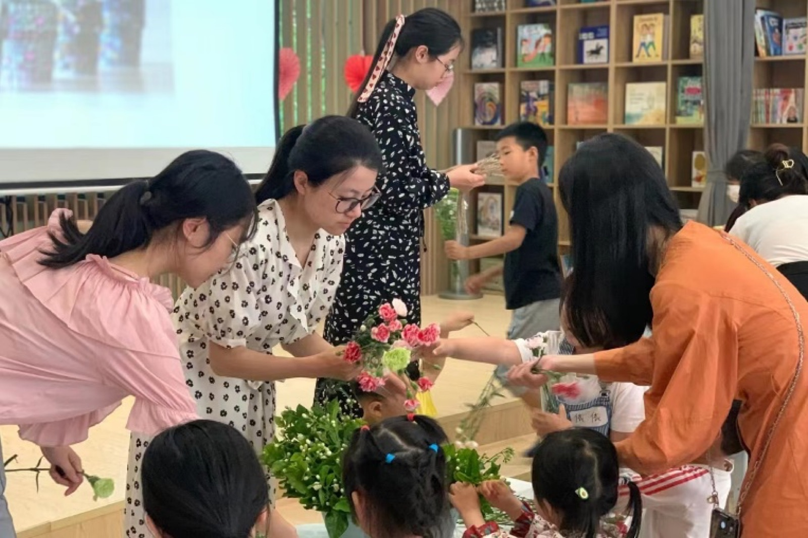

是图书馆
两万余册英文原版书，自然科学、生命科学、社会科学、人文与艺术四大领域，想读什么都有。
慕识是一间开在图书馆里的阅读工坊。两万余册英文原版书、八个阶段的成长路径， 还有一群会问“你从哪里看出来的？”的老师。孩子在这里读得开心，也读得进去。
第一次来约 60 分钟：孩子读一本书、玩一个小任务，家长和老师聊 15 分钟，当天给你一份起点建议。

「让孩子变智慧的方法，是阅读、阅读、再阅读。」慕识同时是图书馆、书店、阅读工坊和活动中心—— 放学后、周末、假期，都能来。
两万余册英文原版书，自然科学、生命科学、社会科学、人文与艺术四大领域，想读什么都有。
南京为数不多的儿童友好书店：倾听儿童的声音，看见儿童的需要，尊重儿童的想法。
以孩子为中心的阅读课：自己选书、自己读、然后说出来。同一本书，每个人可以有不同的发现。
书展、讲座、双语诗会、读者剧场、假期营队——阅读发生在书页之外。
依据加德纳的多元智能理论，人的智能有八种。我们帮孩子找到他真正感兴趣的那一类书， 而不是“别人家孩子在读的那一本”。
从天气、动植物到宇宙与生态，用实景图片与真实案例建立“观察—关联—推导”的习惯。
身体、健康、情绪与成长，让孩子在阅读中理解自己，也理解他人。
地理、历史、城市与规则，用阅读建立视野，也让表达有理有据。
故事、诗歌、音乐与绘画，培养语感与审美，保护孩子对文字的长期热爱。
年龄是建议，起点看孩子。每一阶段都同时练阅读、思考和表达，成果用能看见的证据说话。
愿意听、愿意看、愿意回应。从图片、动作和语调里听懂故事。
围绕熟悉主题，用 1–2 个完整句说清人物、事件和喜好。
从“能读出来”走向“能读懂”：解码规则词、认高频词，按开端—经过—结果复述。
读标题、图注与标签，找主旨与细节，45–60 秒口头复述。
比较对比、梳理因果、提炼主题，写出 60–90 词段落。
从文本里找证据解释观点，区分事实与观点，写 80–120 词段落。
跨文本综合信息，组织“主张—证据—解释”，写 120–180 词。
独立研究、评价信息并清晰表达，完成 180–250 词多段写作。
每升一级，理解、思考、表达和自主学习一起变强。
看图理解 → 解码短句 → 主旨与结构 → 跨文本综合。
观察分类 → 顺序因果 → 事实与观点 → 评价证据。
词语块 → 完整句 → 连贯复述 → 多段论证与演讲。
跟随参与 → 策略使用 → 批注笔记 → 独立研究。
朗读、指导阅读、分享阅读、独立阅读——四种形式，四个人陪。最后，孩子会自己读。
从声音进入故事，不用认识每个词也能享受。
老师示范策略：预测、推断、区分整体与细节。
说出想法、听见不同，把理解讲得更清楚。
独自选书、独自读完，在合适难度里获得成就感。
空间由反几建筑设计事务所设计，概念溯源到 MOUSEION 博学园，用扇贝缺角圆形的曲线做母题。 书塔与孩子的“阅读卡”联动，级别越高，点亮越多，直到毕业。
南京市建邺区白龙江西街 62 号 · 仁恒江湾城同乐坊 2F（近 21 世纪不动产）
025-85710168 / 180 6168 1356
周一至周日 09:30–19:30 · 到访请提前预约